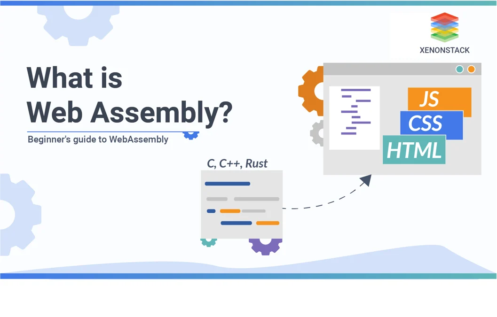

What is WebAssembly?

WebAssembly, often shortened to Wasm, is a low-level binary format designed to run code in the browser at near-native speed. It is not a programming language you write directly, but more of a target that other languages like C, C++, and Rust can compile down to. Think of it like a translator that takes powerful system-level code and makes it work inside a web browser. It was designed to be fast, safe, and portable across different devices and operating systems. The W3C officially made it a standard in December 2019.
WebAssembly runs alongside JavaScript, not as a replacement for it. While JavaScript handles things like interacting with the page and responding to clicks, WebAssembly handles the heavy lifting that requires serious performance. The two work together through a JavaScript API that loads and runs the Wasm module. This makes it a great tool for tasks like physics simulations, image processing, or running game engines in the browser.
One of the biggest things that makes WebAssembly stand out is that it runs in a sandboxed environment, meaning it cannot access anything outside of what the browser allows. This makes it secure even though it runs at such a low level. It is also designed to be compact, so Wasm files download and start up faster than equivalent JavaScript. Because of all these qualities, WebAssembly opened up a whole new category of applications that people never thought would be possible in a browser.